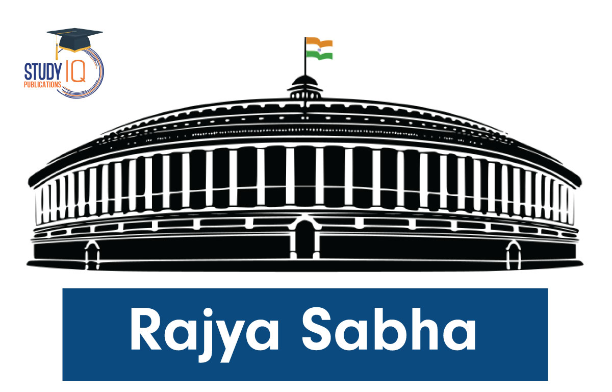
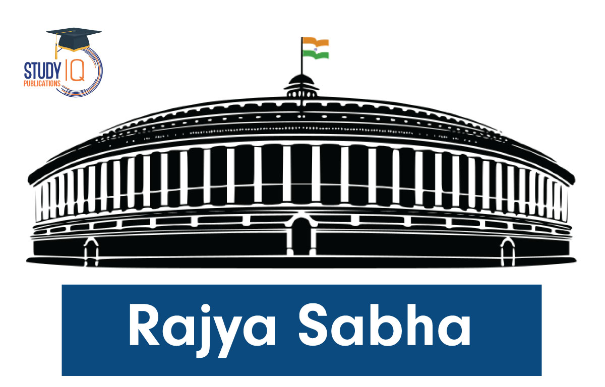
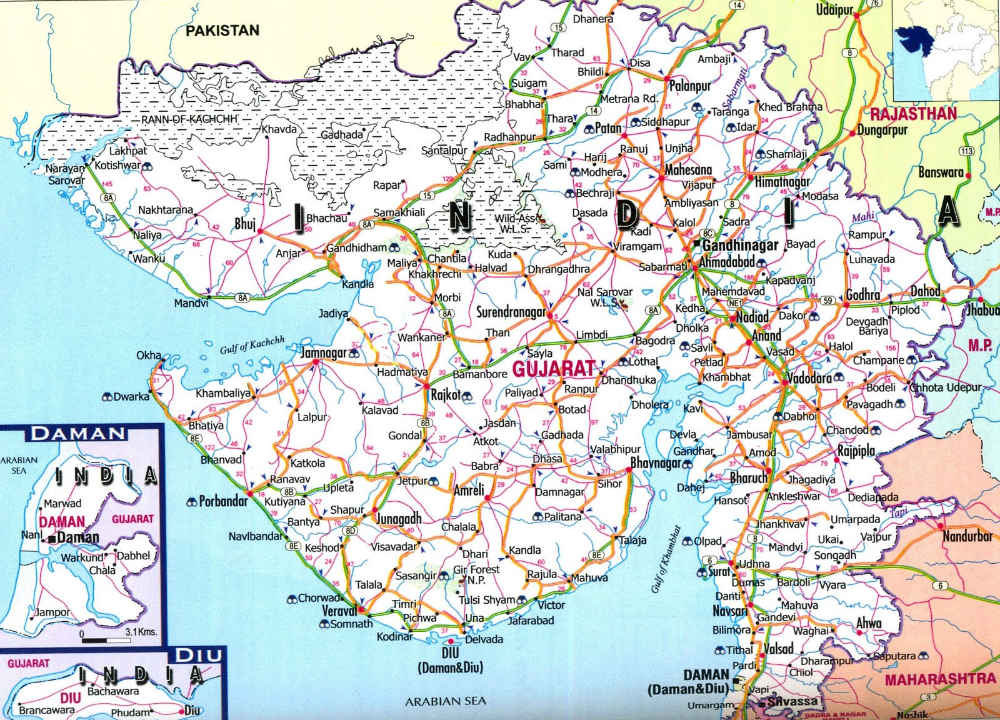

The prime MInister of India is the head of the goverment, responsible for overseeing the functioning of the
executive branch and making crucial decisions for country's Development. The Prime Minister plays a pivotal role
in the policy-making process and represents India on a global platform.
The Prime Minister holds Various significant Responsibilities, inculding:
The Prime Minister leads the
cabinet of ministers, formulating national policies and ensuring their implementation.
Learn about the functions of the parliament
Additional Info:Eligibility to become Prime Minister
To becomen the prime minister, a person must be a member of the lok sabha  or the rajya sabha  and should command the confidence of the majority of the members of the
lok sabha
or the rajya sabha  and should command the confidence of the majority of the members of the
lok sabha
current Prime minister
India's cureent prime minister,Narendr
Modi  , has been serving
since 2014. known for his focua on economic reforms,
digitization, and internationsl diplomacy, his leadership has leaft significant impact on India's growth
trajectory.
, has been serving
since 2014. known for his focua on economic reforms,
digitization, and internationsl diplomacy, his leadership has leaft significant impact on India's growth
trajectory.
Major Intiatives:
Digital India: Aimed at tranusforming India into a digitally empowered society.
Swachh Bharat Abhiyan: A mission to clean India and improve sanitation.
know more about Narendra Modi intiatives
personal Background
Narendra modi was born in vadnagar, Gujarat , on september 17,1950. Before becoming Prime minister, he served as the Chief Minister of Gujarat from 2001 to 2014.
Conclusion
The Prime Minister of India holds one of the most powerful offices in the country, shaping the future of Indiathrough strategic leadership and governance.